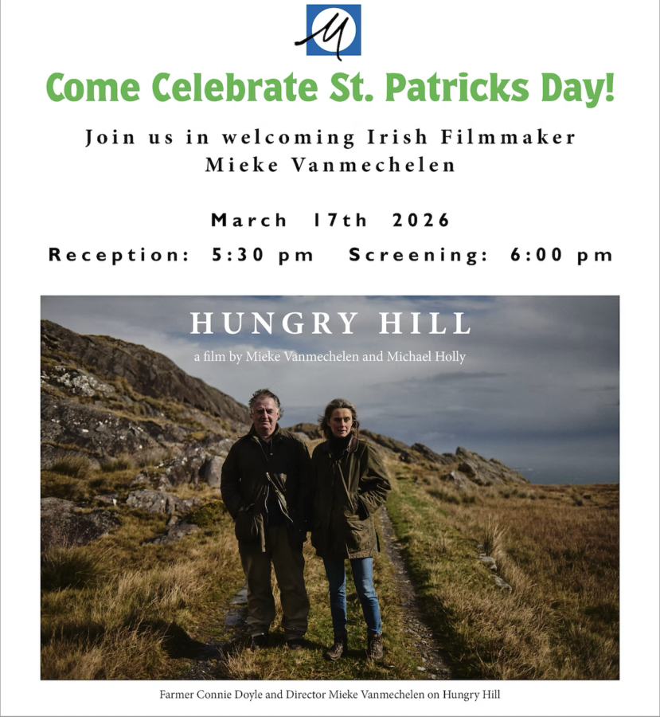

Hungry Hill: A Film by Mieke Vannechelen and Michael Holly
Come celebrate St. Patricks Day with Irish filmmaker Mieke Vanmechelen. Her film ‘Hungry Hill’ documents the daily struggle of a community of sheep farmers in a mountainous region of Ireland, against the backgrop of a historical warning of ecological catastrophe from another part of Europe.
The filmmaker and artists iwll be at the John David Mooney Foundation to dicuss the film after the screening, and the Consul General of Ireland, Brian Cahalane, will open the evening’s celebration.
This screening is in collaboration with The Chicago Irish Film Festival.